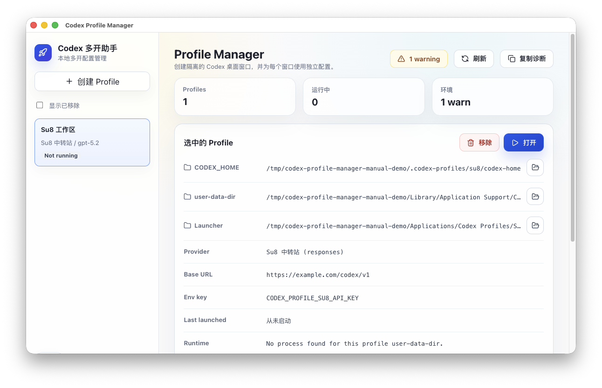
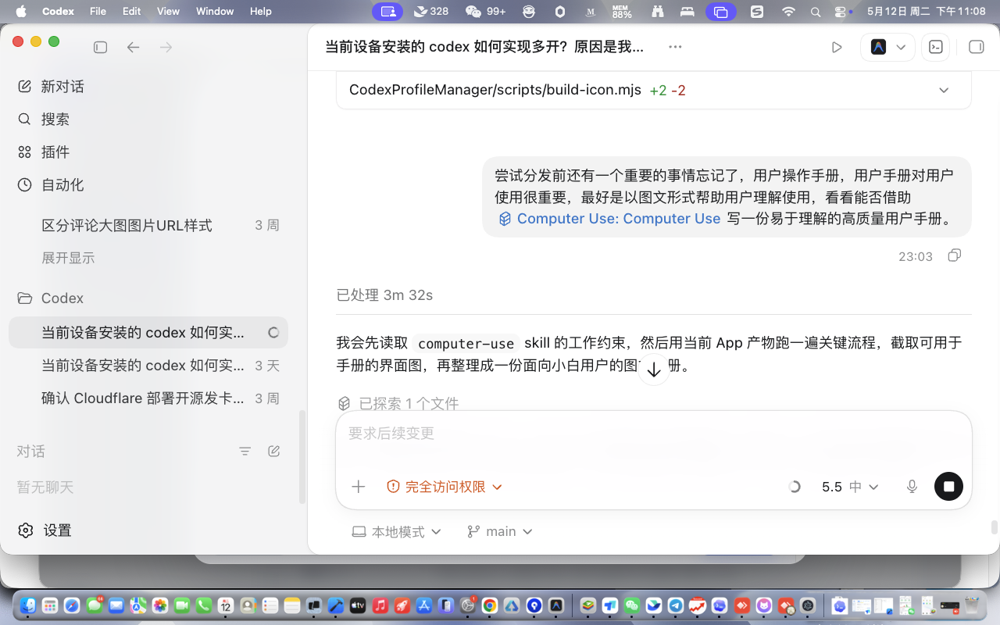
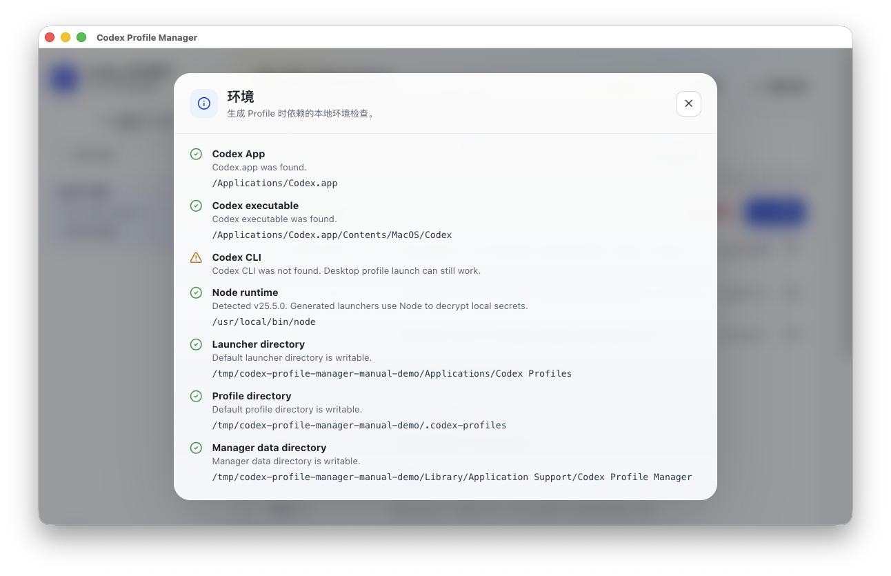

为不同项目创建独立的 `CODEX_HOME` 和 `user-data-dir`，减少配置互相影响。
macOS · Codex 多开 · 第三方 Responses API
让每个 Codex 窗口都有自己的 API 配置。
Codex 多开助手可以创建多个隔离的 Codex 桌面窗口，并为每个窗口配置独立的 API Key、Base URL、模型和启动器。
API Key 本地加密
不修改原 Codex App
支持第三方 Responses 兼容接口

为什么需要它
不用再靠命令行记住不同工作区。
通过表单填写 Base URL、API Key 和模型，不再手动编辑 `config.toml`。
每个 Profile 都会生成自己的启动器 App，像普通应用一样双击打开。
使用流程
从创建到打开，只保留必要步骤。
面向第一次配置的用户，默认继承已有 Codex 配置，并在关键位置给出测试和回退能力。
创建 Profile
命名新的工作区，选择是否继承默认 Codex 配置。
配置 Provider
填写第三方 Responses 兼容接口，或使用官方 OpenAI API Key。
测试并生成
测试 API 可用性，生成配置文件、本地密钥和启动器 App。
双击打开
从主界面或 Finder 启动对应 Codex 窗口。

模型选择
能获取模型列表就选择，获取不到就手动填。
很多第三方服务商提供 `/models` 接口。Codex 多开助手会尝试解析返回结果中的模型 ID，并给出可点击选择。服务商不支持时，不影响手动填写模型。
- 支持常见 `data`、`list`、`results` 返回结构。
- 只使用明确的字符串 `id` 作为模型 ID。
- 测试失败也允许继续生成，便于排查服务商兼容性。
本地安全
API Key 不进入诊断报告，也不写入启动脚本。
本地加密保存
API Key 保存在本机加密文件中，用于启动对应 Profile。
配置可恢复
每次写入 `config.toml` 前都会创建备份，出错后可恢复。
诊断可反馈
复制诊断信息时不会包含 API Key，方便在 Issues 中描述问题。
环境检查
先确认本机条件，再生成启动器。
App 会检查 Codex App、Codex 可执行文件、Node runtime、启动器目录和 Profile 目录。只有 CLI 缺失时通常仍可继续使用桌面多开功能。
查看完整使用说明
MVP 测试版
欢迎小范围试用并提交反馈。
当前版本主要面向 macOS Apple Silicon，支持官方 OpenAI API Key 和第三方 Responses 兼容接口。未签名版本可能需要手动解除 macOS quarantine。
前往 GitHub Releases 下载
在 GitHub Issues 反馈
关注公众号获取更新
试用反馈、版本进展和常见配置问题会优先整理在这里。
xattr -dr com.apple.quarantine "/Applications/Codex 多开助手.app"
常见问题
分发试用前先说清边界。
为什么打开时 macOS 提示无法验证？
当前是未签名 MVP 测试版。正式公开分发前需要 Developer ID 签名和 notarization。
是否支持 Windows？
界面技术栈是 Electron，可跨平台；但当前启动器生成、路径检查和 Codex App 检测都按 macOS 实现，Windows 需要单独适配。
第三方中转站都能用吗？
不保证。MVP 只支持 Responses 兼容接口，服务商需要真正支持 Codex 使用的 Responses API。
反馈问题时需要提供什么？
请提供 macOS 版本、Codex App 版本、服务商名称、Base URL 是否以 `/v1` 结尾、Provider 测试错误信息，以及 App 内复制的诊断报告。